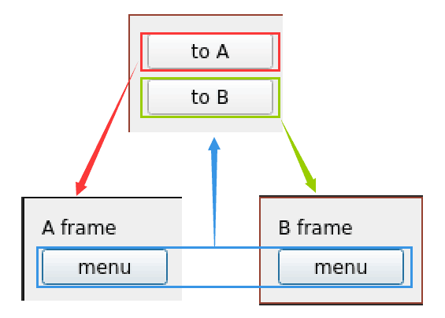

python多窗口切换
写在前面
实现方式:
- QDialog
- QWidget

基于QDialog的窗口切换
import sys
from PyQt5.QtWidgets import QDialog, QWidget, QPushButton, QGridLayout, QLabel, QApplication
class A(QDialog):
def __init__(self):
super().__init__()
button2menu = QPushButton("menu")
button2menu.clicked.connect(self.toMenu)
layout = QGridLayout()
layout.addWidget(QLabel("A frame"))
layout.addWidget(button2menu)
self.setLayout(layout)
def toMenu(self):
self.frame = Menu()
self.frame.show()
self.close()
class B(QDialog):
def __init__(self):
super().__init__()
button2menu = QPushButton("menu")
button2menu.clicked.connect(self.toMenu)
layout = QGridLayout()
layout.addWidget(QLabel("B frame"))
layout.addWidget(button2menu)
self.setLayout(layout)
def toMenu(self):
self.frame = Menu()
self.frame.show()
self.close()
class Menu(QWidget):
def __init__(self):
super().__init__()
button2a = QPushButton("to A")
button2b = QPushButton("to B")
button2a.clicked.connect(self.slotToA)
button2b.clicked.connect(self.slotToB)
layout = QGridLayout()
layout.addWidget(button2a)
layout.addWidget(button2b)
self.setLayout(layout)
def slotToA(self):
self.frame = A()
self.frame.show()
self.close()
def slotToB(self):
self.frame = B()
self.frame.show()
self.close()
app = QApplication(sys.argv)
menu = Menu()
menu.show()
sys.exit(app.exec_())基于QWidget的窗口切换
参考:
import sys
from PyQt5.QtCore import pyqtSignal
from PyQt5.QtWidgets import QWidget, QGridLayout, QPushButton, QLabel, QApplication
class A(QWidget):
a_signal = pyqtSignal()
def __init__(self):
QWidget.__init__(self)
###############################################
# A 页面布局 开始
self.to_menu = QPushButton('menu')
self.to_menu.clicked.connect(self.switch)
layout = QGridLayout()
layout.addWidget(QLabel("A frame"))
layout.addWidget(self.to_menu)
self.setLayout(layout)
# A 页面布局 结束
###############################################
def switch(self):
self.a_signal.emit()
class B(QWidget):
b_signal = pyqtSignal()
def __init__(self):
QWidget.__init__(self)
###############################################
# B 页面布局 开始
self.to_menu = QPushButton('menu')
self.to_menu.clicked.connect(self.switch)
layout = QGridLayout()
layout.addWidget(QLabel("B frame"))
layout.addWidget(self.to_menu)
self.setLayout(layout)
# B 页面布局 结束
###############################################
def switch(self):
self.b_signal.emit()
class Menu(QWidget):
menu_signal_a = pyqtSignal()
menu_signal_b = pyqtSignal()
def __init__(self):
QWidget.__init__(self)
###############################################
# 主菜单布局 开始
layout = QGridLayout()
self.button_a = QPushButton('to A')
self.button_a.clicked.connect(self.toA)
self.button_b = QPushButton('to B')
self.button_b.clicked.connect(self.toB)
layout.addWidget(self.button_a)
layout.addWidget(self.button_b)
self.setLayout(layout)
# 主菜单布局 结束
###############################################
def toA(self):
self.menu_signal_b.emit()
def toB(self):
self.menu_signal_a.emit()
# 窗口控制部分
class Control:
def __init__(self):
self.menu = Menu()
self.b = B()
self.a = A()
def showMenu(self):
self.menu.menu_signal_b.connect(self.showA) # 信号量连接，menu->b
self.menu.menu_signal_a.connect(self.showB) # 信号量连接，mneu->a
self.menu.show() # pyqt5函数，显示
self.b.close() # pyqt5函数，关闭窗口
self.a.close() # pyqt5函数，关闭窗口
def showB(self):
self.b.b_signal.connect(self.showMenu)
self.b.show() # pyqt5函数，显示
self.a.close() # pyqt5函数，关闭窗口
self.menu.close() # pyqt5函数，关闭窗口
def showA(self):
self.a.a_signal.connect(self.showMenu)
self.a.show() # pyqt5函数，显示
self.b.close() # pyqt5函数，关闭窗口
self.menu.close() # pyqt5函数，关闭窗口
app = QApplication(sys.argv)
control = Control()
control.showMenu()
sys.exit(app.exec_())
comment:
- Valine
- LiveRe
- ChangYan